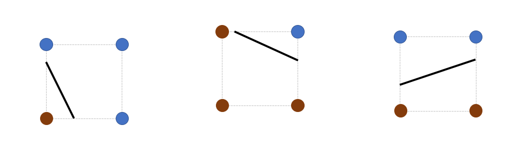
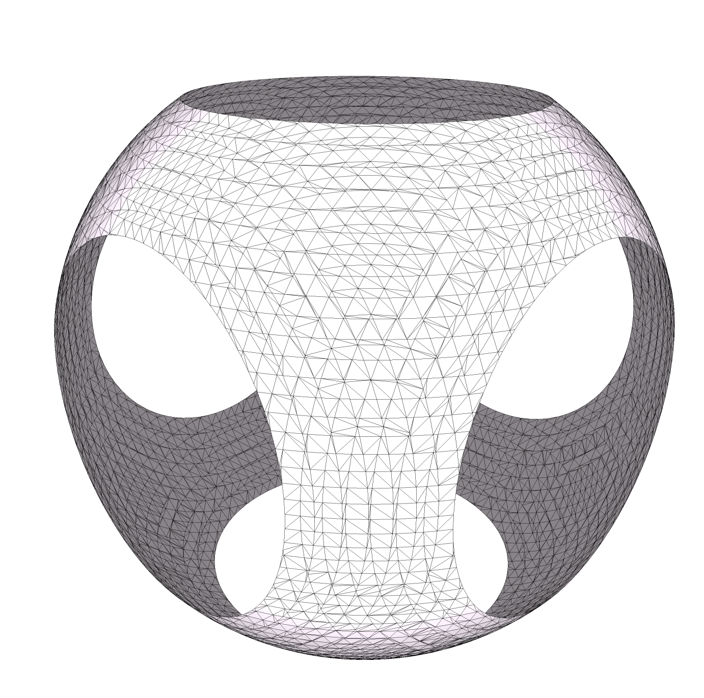
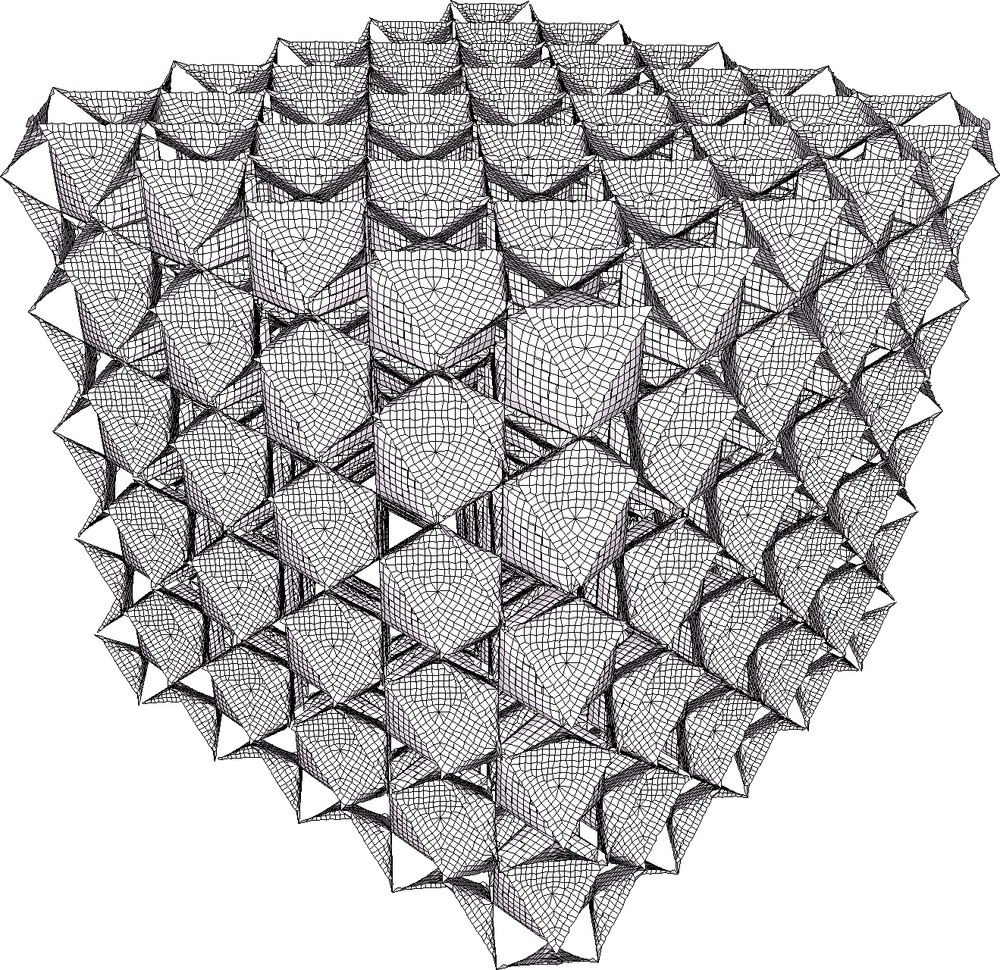
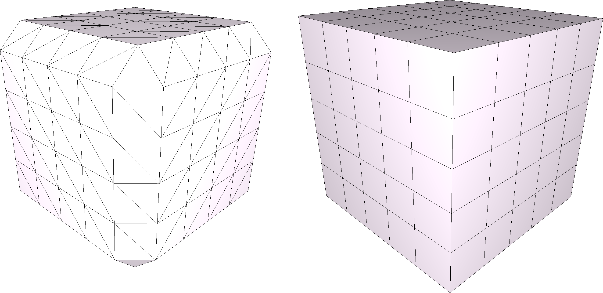
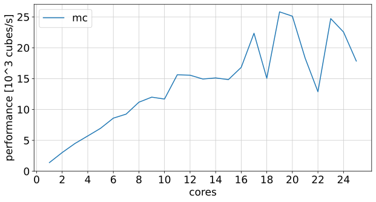

|
CGAL 6.0 - 3D Isosurfacing
|
Loading...
Searching...
No Matches
|
CGAL 6.0 - 3D Isosurfacing
|

Figure 60.1 Isosurfacing with different isovalues for the tractor model (courtesy the GrabCAD library).
Isosurfacing, also referred to as isosurface extraction, involves the generation of an approximate isosurface from a sampled 3D scalar field. The output isosurface may consist of a single or of multiple, disjoint connected components. Isosurfacing is commonly required for volume visualization or simulation of physical phenomena.
This package provides several isosurfacing algorithms that compute a surface mesh approximating an isosurface of a 3D scalar field defined over an input 3D domain. An isosurface is defined as the points of constant value of this scalar field, i.e., a level set. Such a constant value, referred to as isovalue, is user-defined. For well-behaved scalar fields (e.g., non-zero gradient), the above level set is a surface. Depending on the isosurfacing method and the input data structure, the output is either a triangle, a quadrangle or a polygon surface mesh represented as an indexed face set. Note that the output may be empty when the isosurface is absent from the sampled input scalar field.
The scientific literature abounds with algorithms for extracting isosurfaces, each coming with different properties for the output and requirements for the input.
MC runs over a 3D grid, i.e., a 3D domain partitioned into hexahedral cells, and processes all cells of the input 3D domain individually while sampling the input scalar field at the grid corners. Each cell corner is assigned a sign (+/-) to indicate whether its scalar field value is above or below the user-defined isovalue. MC creates a vertex for each grid edge with a sign change, i.e., where the edge intersects the isosurface. More specifically, the vertex position is computed via linear interpolation of the scalar field values evaluated at the cell corners forming the edge. Depending on the configuration of signs at the cell corners, the resulting vertices are connected to form triangles within the cell. The figure below illustrates the configurations in 2D. There is no less than 33 cases in 3D (not shown).

Figure 60.2 Different configurations of Marching Cubes in 2D.
The proposed implementation is generic in that it can process any grid-based data structure that consists of hexahedral cells. In case of a conforming grid, MC generates as output a surface triangle mesh that is 2-manifold in most scenarios.

Figure 60.3 The output MC mesh has boundaries when the isosurface intersects the domain boundary.
As MC only proceeds by linear interpolation of the sampled scalar field along the grid edges, it can miss details or components that are not captured by the said sampling and interpolation.
Compared to other approaches such as Delaunay refinement, and depending on the parameters, the MC algorithm often generates more triangles, and more skinny triangles with small or large angles. [The statement is too strong - I would largely reformulate it as this depends too much on the parameters. I recommend to add instead a figure with different parameters and methods, depicting the mesh edges in black in addition to the shaded facets] MC does not preserve the sharp features present in the isovalue of the input scalar field
This algorithm is an extension to MC and provides additional guarantees for the output [1]. It generates as output a mesh that is homeomorphic to the trilinear interpolant of the input scalar field inside each cube. This means that the output mesh can accurately represent small complex features. For example, a tunnel of the isosurface within a single cell is topologically resolved. Furthermore, the mesh is guaranteed to be 2-manifold and watertight, as long as the isosurface does not intersect the domain boundaries.
The DC algorithm generates one vertex for each cell that is intersected by the isosurface. Next, a face is created for each edge that intersects the isosurface, by connecting the vertices of the incident cells. For a uniform hexahedral grid, this results into a quadrilateral surface mesh.
As the original DC method requires the gradient of the scalar field, the domain must implement the concept IsosurfacingDomainWithGradient_3 in order to provide a gradient field in addition to a scalar field. All default domain implementations provide a gradient field, but assume the gradient to be null everywhere when it is not provided as an additional parameter. Alternatively, some default gradient fields are provided such as Isosurfacing::Finite_difference_gradient_3 and Isosurfacing::Explicit_Cartesian_grid_gradient_3.
Variants of DC differ in the way they compute vertex positions. The vertex positioning is thus configurable with an optional parameter passed to the DC algorithm. Some variants do not require the gradient and therefore run successfully even when the default null gradient is provided.
Dual Contouring can deal with any domain but guarantees neither a 2-manifold nor a watertight mesh. It generates fewer faces than Marching Cubes, in general. Its advantage over MC is its ability to recover sharp creases and corners.

Figure 60.4 Isosurface of the IWP scalar field generated by Dual Contouring.
The following table compares the algorithms in terms of constraints over the input 3D domain, the facets of the output surface mesh, and the 2-manifold property of the output surface mesh.
| Algorithm | Domains | Facets | 2-Manifold | Watertight* | Topologically correct |
|---|---|---|---|---|---|
| MC | Hexahedral | Triangles | no | no | no |
| TMC | Hexahedral | Triangles | yes | yes | yes |
| DC | All | Polygons | no | no | no |
(* assuming the isosurface does not exit the specified bounding box of the input 3D domain)

Figure 60.5 Comparison between a cube generated by Marching Cubes (left) and Dual Contouring (right).
Each algorithm can be called by a single templated function, and the function signature is common to all algorithms:
The input is provided in the form of a domain (see Domains).
The isovalue scalar parameter denotes the value used for sampling the input scalar field for generating the isosurface.
The output surface mesh is provided in the form of a indexed face set, which is stored into two containers of points and polygons. The vertex positions are stored as Point_3 in points. Each face in polygons is a list of indices pointing into the points container. Depending on the algorithm, the indexed face set may store either a polygon soup (unorganized polygons with no relationship whatsoever, i.e., no connectivity between them) or a mesh with connectivity.
The isosurfacing algorithms can run either sequentially on one CPU core or in parallel on multicore architectures with shared memory. The template parameter ConcurrencyTag is used to specify how the algorithm is executed: either Sequential_tag or Parallel_tag. To enable parallelism, CGAL must be linked with the Intel TBB library. When the parallel version is not available due to unsuccessful link with the TBB library, then the sequential version is utilized as a fallback.
A domain is an object that provides functions to access the input data, its geometry, topology, and optionally its gradient.
IsosurfacingDomain_3 or IsosurfacingDomainWithGradient_3 concepts.The class CGAL::Isosurfacing::Implicit_Cartesian_grid_domain_3 represents the input scalar field in an implicit form without storing any values. It takes a function-object (functor) or lambda function that computes the value of the scalar field from the position of a vertex query. Additionally, the bounding box and spacing between the grid points must be provided.
The class CGAL::Isosurfacing::Explicit_Cartesian_grid_domain_3 only takes a grid as parameter, such as CGAL::Isosurfacing::Cartesian_grid_3. It represents a uniform grid of scalar field values that are either computed by the user or read from an Image_3. The constructor of Cartesian_grid_3 requires the number of grid points in each dimension (x, y, z) and the bounding box. The field values are read and written with value(x, y, z) where x, y, and z denote the coordinates of a grid point. Alternatively, all required data can be copied from an CGAL::Image_3.

Figure 60.6 Scalability of the Marching Cubes algorithm. We plot the algorithm efficiency (number of thousand-cubes per second) against the number of CPU cores.
The following example shows the usage of the Marching Cubes algorithm to extract an isosurface. The domain is an implicit domain that describes the unit sphere by the distance to its center (set to the origin) as an implicit field.
File Isosurfacing_3/marching_cubes_implicit_sphere.cpp
The following example runs all provided algorithms to extract an isosurface. The input 3D domain is a Cartesian_grid_domain that describes a cube by storing the Manhattan distance to its origin in an explicit Cartesian grid domain.
File Isosurfacing_3/all_Cartesian_cube.cpp
The following example shows how to load data from an Image_3.
File Isosurfacing_3/marching_cubes_inrimage.cpp
The following example illustrates how to generates a mesh approximating a signed offset to an input closed surface mesh. The input mesh is stored into an AABB_tree data structure to provide fast distance queries. Via the Side_of_triangle_mesh functor, the sign of the distance field is made negative inside the mesh.
File Isosurfacing_3/dual_contouring_mesh_offset.cpp